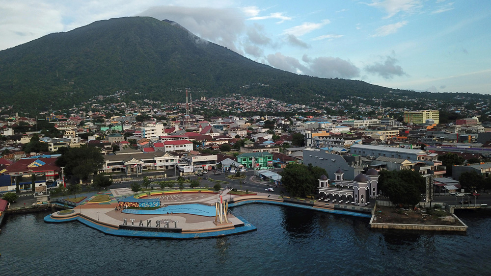
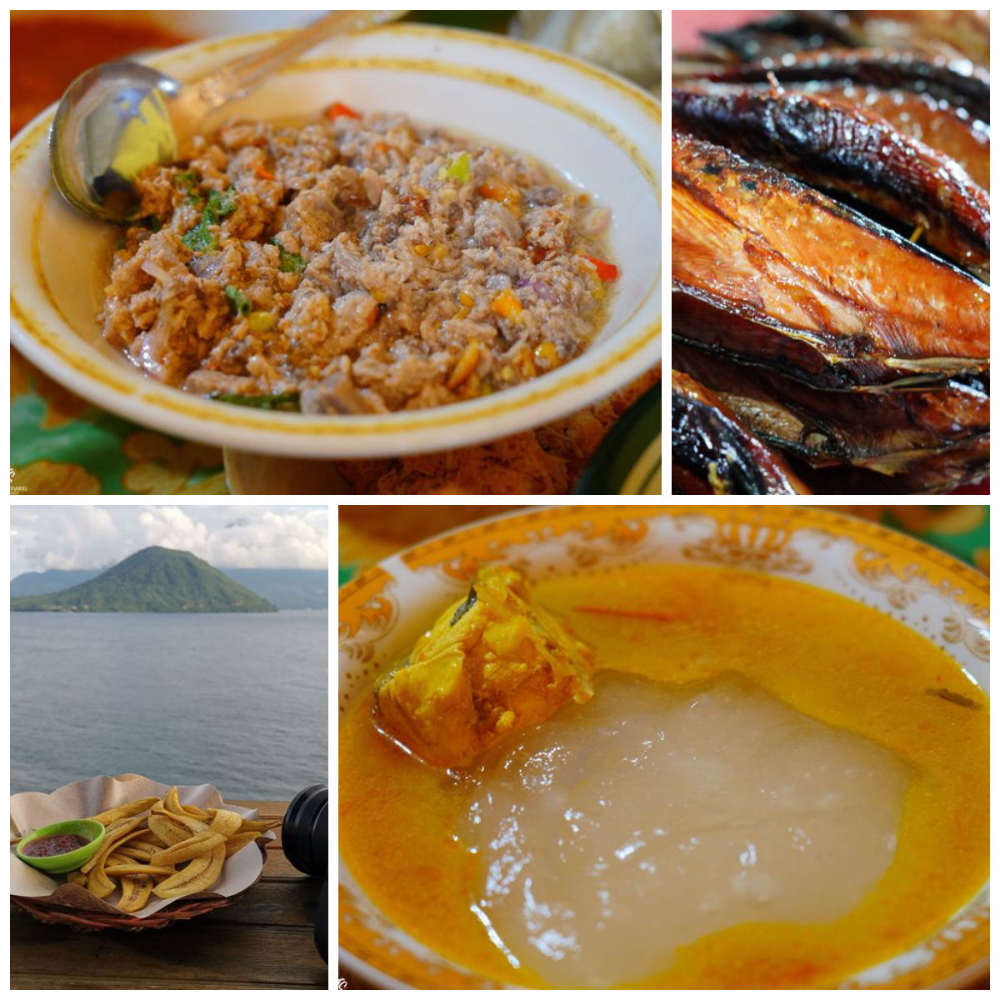

Sejarah
Kota Ternate terletak antara 3° Lintang Utara dan 3° Lintang Selatan
serta 124-129° Bujur Timur . Wilayah Kota Ternate di sebelah utara,
selatan dan barat berbatasan dengan Laut Maluku, dan di sebelah
timur berbatasan dengan Selat Halmahera.7 Sebagai kota kepulauan,
Kota Ternate terdiri atas 8 pulau, yakni: Pulau Ternate sebagai
pulau yang utama, Pulau Hiri, Pulau Moti, Pulau Mayau, dan Pulau
Tifure merupakan lima pulau yang berpenduduk, sedangkan terdapat
tiga pulau lain seperti Pulau Maka, Pulau Mano dan Pulau Gurida
merupakan pulau berukuran kecil yang tidak berpenghuni.
Luas wilayah Kota Ternate 5.795, 4 km², terdiri dari luas perairan
5.544,55 km² dan luas daratan 250,85 km². Secara Administrasi
Pemerintahan Kota Ternate terbagi atas 7 (tujuh) kecamatan dan 77
(tujuh puluh tujuh) kelurahan, masing-masing: Ternate Utara
membawahi 14 kelurahan Ternate Tengah membawahi 15 kelurahan Ternate
Selatan membawahi 17 kelurahan Pulau Ternate membawahi 13 kelurahan
Pulau Moti membawahi 6 kelurahan Pulau Hiri membawahi 6 kelurahan
Pulau Batang Dua membawahi 6 kelurahan Kondisi topografi Kota
Ternate dengan sebagian besar daerah bergunung dan berbukit, terdiri
atas pulau vulkanis dan pulau karang dengan kondisi jenis tanah
Rogusal ( Pulau Ternate, Pulau Hiri, dan Pulau Moti) dan Rensika
(Pulau Mayau, Pulau Tifure, Pulau Maka, Pulau Mano dan Pulau
Gurida). Gunung Gamalama merupakan gunung api yang masih aktif yang
terletak di tengah Pulau Ternate.

Kuliner
Kota ternate terkenal dengan kuliner khasnya yang lezat dan beragam.
Salah satu kuliner khas yang terkenal di ternate adalah
Popeda, Popeda
biasanya disantap bersama kuah ikan asam yang segar dan pedas. Dan
tentunya dengan sejumlah lauk lainnya.
Gohu Ikan
Gohu Ikan. Inilah makanan khas Ternate yang disebut-sebut sebagai
Sashimi-nya Ternate. Betapa tidak. Tidak berbeda jauh dengan sashimi
dari Jepang, Gohu Ikan yang terbuat dari ikan Tuna atau Cakalang
mentah ini diproses tanpa dimasak.
Ikan Fufu
Ikan Fufu sangat populer di kota ternate dalam bahasa Ternate, Fufu
artinya dibakar atau diasap. Jadi persis namanya, ikan ini memang
diolah dengan cara diasapi. Proses pembuatannya pun cukup lama, bisa
sampai sekitar 4 jam. Dan jenis ikan yang diasapi itu biasanya ikan
tongkol atau ikan tuna. Jenis ikan yang memang paling banyak
ditemukan di Laut Maluku sampai Laut Halmahera.
Selain itu, kota ternate juga memiliki kuliner khas lain yang tidak
kalah lezat. Salah satu contohnya adalah
Air Guraka,
Ternate juga membanggakan minuman khasnya yang sangat populer, yakni
Air Guraka atau Air Jahe. Minuman khas ini dibuat dari campuran jahe
parut dan gula aren yang kemudian ditaburi kenari di atasnya. Enak
tenan!
Pisang Mulu Bebe, Inilah pasangan Air Guraka yang paling banyak dicari. Di wilayah
Maluku Utara memang terdapat berbagai varietas pisang, antara lain
pisang goroho, pisang sepatu, pisang raja, pisang tanduk, pisang
mulu bebe dan lain-lain. Namun, dari semua pisang yang ada, tidak
ada yang bisa menyaingi ketenaran pisang mulu bebe.

Wisata
Kota ternate merupakan destinasi wisata populer di Indonesia,
terutama karena keindahan alamnya dan sejarahnya yang kaya. Berikut
Terdapat beberapa objek wista menarik yang dapat ditemui di kota
Ternate ini diantaranya yang wajib dikunjungi.